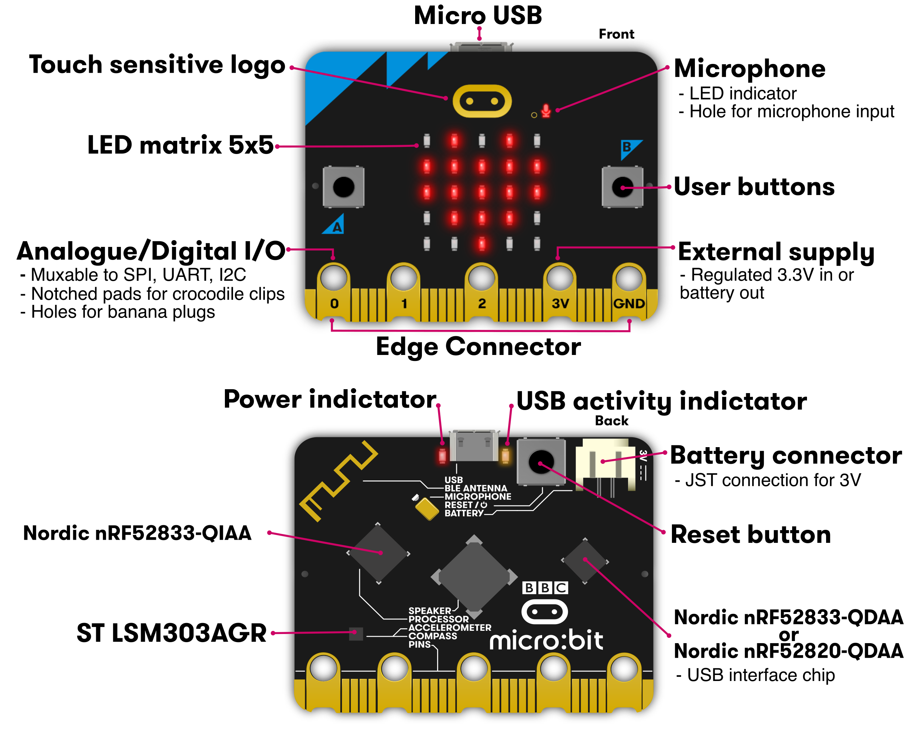
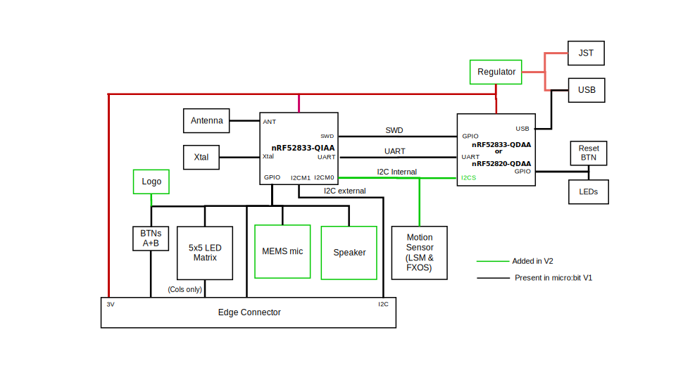
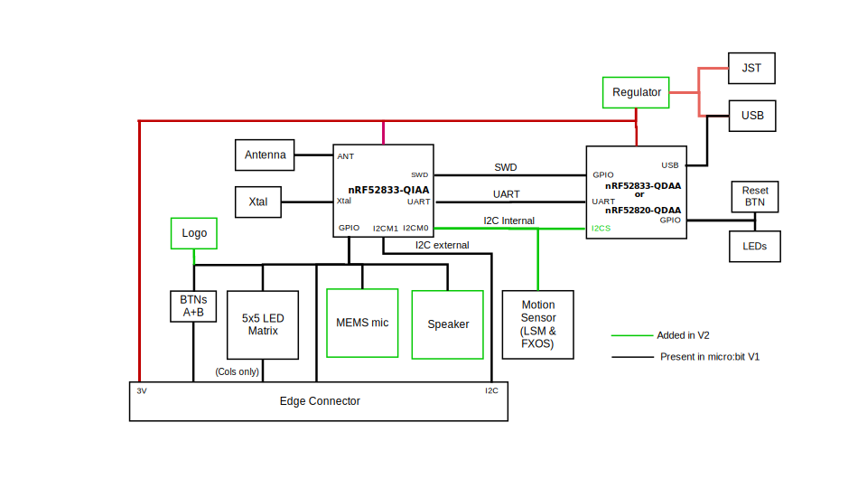
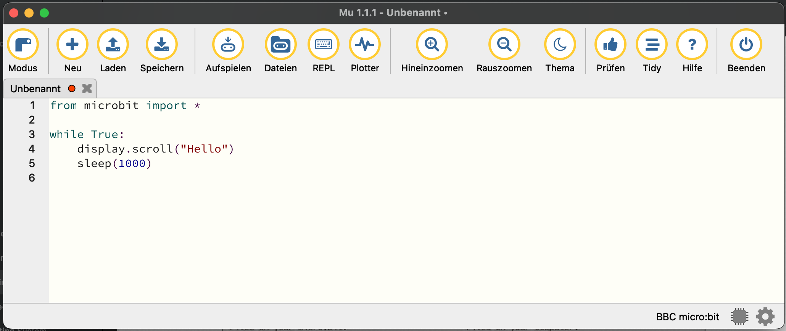

Projekt Micro:bit
Der BBC Micro:bit ist ein kleines embedded Device mit einem ARM M-Core und einigen Sensoren, Tastern und LEDs. Die Zielgruppe des Mirco:bit sind Schüler.
Die Skripte in diesem Repository sind Inspiriert durch "Make: Getting Started with the micro:bit" von Wolfram Donat.
Hardware
Die Dokumentation für die Micro:bit Hardware findet sich auf tech.microbit.org.

 

Programmieren mit MicroPython
Auf der Micro:bit Seite wird ein Online Editor angeboten. Diese ist die einfachste Möglichkeit um mit dem Programmieren zu starten, und eine MicroPython hex-Datei für den Micro:bit zu bekommen.
Wenn der Micro:bit mit dem Rechner verbunden ist erscheint er als externen Laufwerk. Die hex-Datei die mit dem Online-Editor erzeugt wurde kann auf den Microbit übertragen werden indem sie auf dieses Laufwerk kopiert wird.
Mu IDE einrichten
Der Online-Editor ist für erste Versuche geeignet, um echte Projekte umzusetzen eignet sich eine lokale "Integrierte Entwicklungsumgebung" (Integrated Development Environment, IDE) besser. Für diese Beschreibung verwende ich mu. Mu ist eine sehr einfache IDE für MicroPython.
Mu IDE testen
Stelle sicher dass dein Micro:bit mit deinem Rechner verbunden ist und das externe Laufwerk "MICROBIT" angezeigt wird. Starte dann Mu im Micro:bit Modus.
Das erste Program mit Mu, zum testen ob die Integration funktioniert ist:
from microbit import *
while True:
display.scroll('Hello')
sleep(1000)
Gib dieses Program in Mu ein und drück den Knopf "Aufspielen".

Nach ein paar Sekunden erscheint auf dem LED-Display des Mirco:bit der Text "Hello", gefolgt von einer kurzen Pause.
Mini-Projekte
Nachdem Mu eingerichtet ist können wir mit ersten Mini-Projekten starten um die verfügbaren Sensoren, Taster und Ausgabe-Optionen kennenzulernen.
Die API Referenz (Application Programming Interface, API) findest du integriert im Micro:bit Python Online Editor.
Dot-Matrix-Display
Die Mirco:bit API stellt ein "display" Objekt bereit, mit dem auf einfach Texte und vordefinierte Bilder auf dem Dot-Matrix-Display angezeigt werden können.
Vordefinierte Grafiken
Bilder können über Konstanten ausgewählt werden. Ein Herz kann z.B. mit dem folgenden Skript angezeigt werden:
from microbit import *
display.show(Image.HEART)
sleep(1000)
Die Liste mit allen vordefinierten Bildern findet sich in der API.
Das folgende Skript zeigt im Wechsel das große und kleine Herz dar:
from microbit import *
while True:
display.show(Image.HEART)
sleep(1000)
display.show(Image.HEART_SMALL)
sleep(1000)
Text scrollen
Text anzeigen
Pixel
Knöpfe
Accelerometer
Bluetooth
Licht-Sensor
Temperatur-Sensor
Kompass
Töne
Mikrofon
Touch-Logo
Projekt Schrittzähler
Mirco:bit als Schrittzähler
Projekt Tracks
Tracks aufzeichnen mit Kompass und Beschleunigungssensor